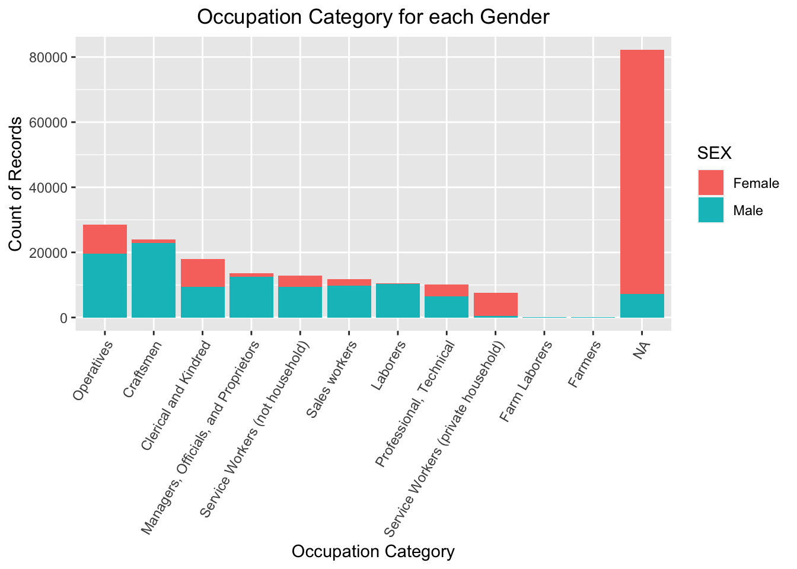

Chapter 4 Missing values
As the one of world’s largest collections of open-access census microdata, IPUMS has been meticulously cleaned and analyzed for completeness and missing patterns. According to its documentation, “missing, illegible and inconsistent values” in variables are edited or allocated, and tagged with data quality flags to indicate the kind of edits applied1. When understanding the missing values in the outcome data, which we will use for this project, we need bear in mind that the above-mentioned sources of missing values are cleaned and interpolated by the IPUMS team to the best they can.
To reduce the visual clutter in the plot of missing patterns, we rename variable names into 3 letter abbreviations and remove the variables that are not related to working conditions such as person unique identifier. In total, there are 306 missing patterns, but tails are almost negligible in terms of their percentage. Thus, we focus on top 30 patterns which made up the majority of the data. To do this, we augment the plot_missing function to add a parameter to control how many patterns to display in graph. The results are shown below.
# Load data
df <- read.csv(file = 'data/ipums_nyc_1_percent_decoded.csv',na.strings=c(""))
# Abbreviate variable names
colnames(df) <-c("YR", "SER", "PER", "SEX", "RAC", "AGE", "REL",
"MAR", "FS", "BP", "MBP", "FBP", "NAT", "CIT",
"YRI", "LIT", "EDS", "OCC", "OCS", "PRS",
"IND", "EMP", "INC", "OCA", "ICA")
# Remove variable irrelevant to working condition analysis
df <- df %>% select (-c("YR", "SER", "PER", "FS", "NAT"))
# Plot top 30 missing patterns
plot_missing_top(df, percent = TRUE, top_patterns = 30)
Focusing the proportion of missing values for different variables, we first observe that basic demographic variables, such as age, sex, race, relationship to head of household, have no missing value for the entirety of the dataset. This is understandable because these demographic information are what the census bureau primarily want to collect, and these questions are asked consistently across the decades.
Moving to the left side of the top bar chart, we can see that income, year of immigration, and citizenship status, are the three variables with the highest proportion of missing values. The proportion of missing value of income is due to the fact that this variable is only introduced in the year 1940, the last of the nine census years that our dataset covers. Similarly, influenced by the evolving US immigration law, year of immigration and citizenship status fields came in and out of the census survey questionnaires across the century, resulting in higher percentage of missing values.
The next groups of variables with relatively high level of missing values are all occupation-related. In fact, they almost have the identical proportion of missing values. After digging into the documentation and data transformation process, we quickly realize these variables all stem from two root variable OCC (occupation) and IND (industry). OCA and ICA stand for occupation category and industry category, which are higher level categorization of the detailed information. OCS, EDS, PRS are scores that captures the wage level, education level, and prestige level of a certain occupation, thus are tied to the OCC variable2. Overall, 39% of the population doesn’t have OCC information. When inspecting their demographic information, they tend to be younger children or females.
Now we switch our attention to the missing patterns. One noticeable trend in the patterns is that the occupation related variables tend to be missing together, a phenomenon discussed and explained in the previous paragraph. The most common missing pattern is the population with no occupation information and no year of immigration, which implies they are native-born residents doing non-wage earning house keeping at home. The next three most common patterns are very similar to the first one, and together they account for about one-third of the population. These missing patterns begs the question of why so many people are missing from the workspace and labor force.
Introduction to Data Editing and Allocation. “IPUMS USA.” IPUMS.org. Accessed 2021 Nov 18. https://usa.ipums.org/usa/flags.shtml↩︎
Integrated Occupation And Industry Codes And Occupational Standing Variables In The Ipums. “IPUMS USA.” IPUMS.org. Accessed 2021 Nov 18. https://usa.ipums.org/usa/chapter4/chapter4.shtml↩︎